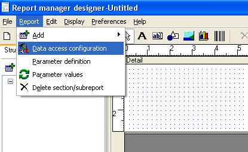
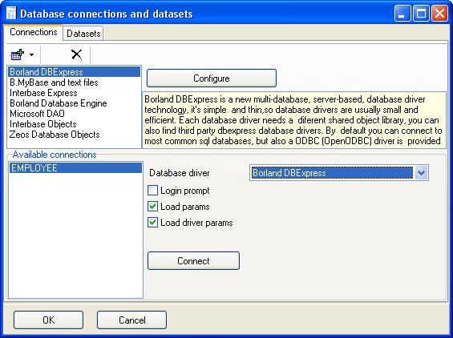
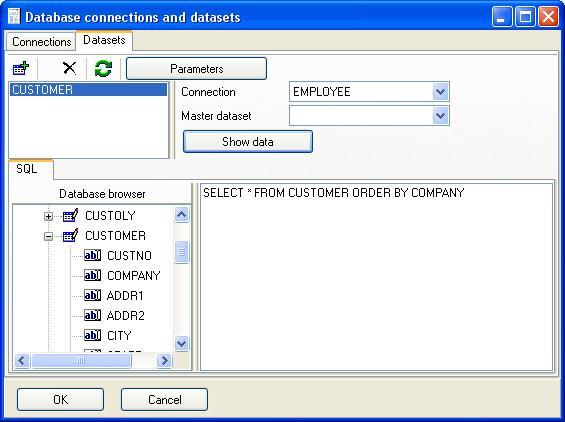
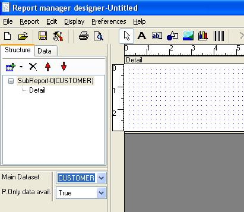

To print a report you usually need a dataset, for example a list of customers, employees, projects,....
The first step of report design procedure should be open the main dataset, the engine will print the detail section/s for each record in the dataset.
In the sample we will use DBExpress driver to connect througth Interbase/Firebird to the sample database employee.gdb, the completed sample is tut2.rep file in repsamples directory.

Then you must select the DBExpress driver and you will have a list of available connections, if you are using Delphi/Kylix/Builder development enviroments you will see the same list you see in your tool.

You can edit the connections and test them, click 'Configure' button:
In top of database connection window you will see the location of DBExpress configuration files, the most important parameters of this sample are Database, User_Name and Password, but it's recommended to set TransIsolation level to Repeteable Read so the report will be consistent (don't worry, Interbase/Firebird don't block writers/readers in this mode).
You can add, remove, test connection and view driver files, with some options you need to select the driver first (for example adding a new connection).
Close the database connections configuration window, now you can select one or more connection names, you select it in the combobox and click the buttons beside the list to add or remove them.
Add EMPLOYEE connection name and lets go to write a SQL sentence to obtain customer data, to do that click 'Add' Button, enter a alias for the dataset and enter the correct SQL sentence:

To check and view the dataset click 'Show data' button.
You can navigate (unidirectional) throught the dataset, close this windows and click 'Ok' button to save and go to the main report design window.
Now you must assign the dataset to the subreport, click the subreport item in the design tree and select it in the compo of the object inspector:

It could be a nice moment to save the report.